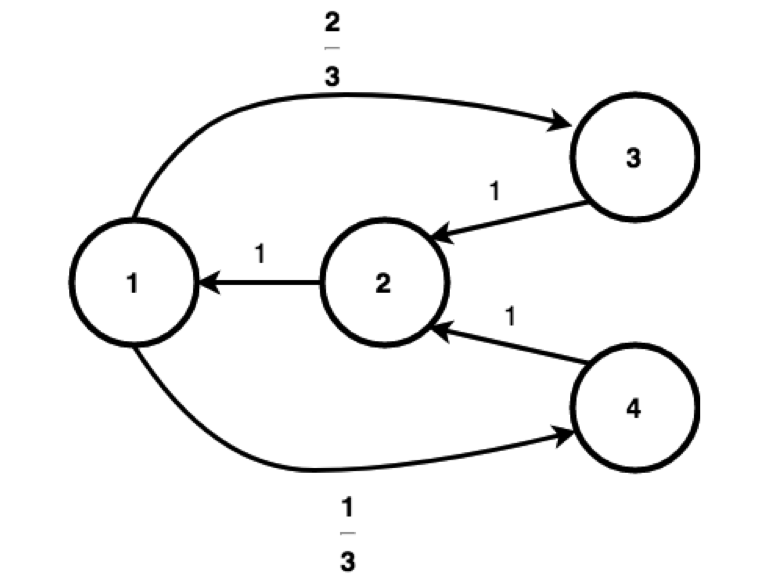

##
## Attaching package: 'grid'## The following object is masked from 'package:mixtools':
##
## depth
Irreducible : Yes
The chain is irreducible since we can have a sequence {1,3,2,1,4,2,1,3} which cointains all the paths from i to j \(\forall i,j\). Therefore we can see that all the nodes are communicating with eachother.
Periodic: Yes
We can clearly see that \(p_{ii} ^{(1)} = 0\) for all i. Moreover we can also see that the same is the case for \(p_{ii}^{(2)} = 0\). However we can also see that:
\[ p_{11}^{(3)} = 1\] \[ p_{22}^{(3)} = 1\] And we can see that \(p_{33}^{(3)} > 0, p_{44}^{(3)}>0\). But then again at n=4,5 we have all equal to 0.
It is obvious that \(p_{ii}^{(n)} > 0, \forall{i}\) only when \(3 | n\). Thus the period is 3.
We could have also just looked at \(p_{11}^{(n)} >0\) when \(3|n\)and then since chain is irreducible we could have said that since period of 1 is 3, by Equal Periods Lemma Corollary we have that all periods are 3 thus the chain has period 3.
Since we can look at the chain as: 1 -> (3 or 4) -> 2 -> 1, we can assign probabilities of \(\frac{1}{3}\) to each of those outcomes. that means that \(\pi_1=\pi_2=\frac{1}{3}\) and then we can take \(\pi_3=\frac{1}{3}\cdot\frac{2}{3}=\frac{2}{9}\) and \(\pi_r=\frac{1}{3}\cdot\frac{1}{3}=\frac{1}{9}\)
Thus we have: \[ \pi = [\frac{1}{3},\frac{1}{3},\frac{2}{9},\frac{1}{9} ]^T \]
We can check that this is a stationary distribution by doing:
\[ \sum_{i \in S}{\pi_i = 1} \] \[\sum_{i \in S}{\pi_i p_{i1}} = \frac{1}{3} = \pi_1 \] \[\sum_{i \in S}{\pi_i p_{i2}} = \frac{1}{3} = \pi_2 \] \[\sum_{i \in S}{\pi_i p_{i3}} = \frac{2}{9} = \pi_3 \] \[\sum_{i \in S}{\pi_i p_{i4}} = \frac{1}{9} = \pi_4 \]
No it is not reversible. Since:
\[\frac{2}{9} = \pi_1 p_{13} \neq \pi_3 p_{31} =\frac{2}{9}\cdot 0 = 0\]
False.
\[ \{ p_{12}^{(n)} \}_{1}^{\infty} = \{0,1,0,0,1,0,0,1,0,... \} \] It is obvious that this sequence has no limit since it oscillates between 0 and 1.
False.
\[ \{ \frac{1}{2}(p_{12}^{(n)} + p_{12}^{(n+1)}) \}_{1}^{\infty} = \{0.5,0.5,0,0.5,0.5,0,... \}\] Again we can see that the sequence is oscillating and therefore will have no limit.
True.
\[ \{ \frac{1}{n}( \sum_{k=1}^n p_{12}^{(k)} ) \}_{1}^{\infty} = \{0,\frac{1}{2},\frac{1}{3},\frac{1}{4},\frac{2}{5},\frac{1}{3},... \}\]
\[ \lim_{n \to \infty} \{ \frac{1}{n}( \sum_{k=1}^n p_{12}^{(k)} ) \} = \frac{1}{3} =\pi_2\]
There are 2 possible approaches:
Write down the 64x64 transition probabilities matrix P
Compute \(P^n\) for a very large n
Multiply \(\pi_0 P^n\) where \(\pi_0\) is the vector of initial probabilities, which in our case would be almost all zeroes, with a single 1 in the place corresponding to a bottom-left corner.
Since the Markov Chain has nice properties (irreducible, finite state space, aperiodic). We can treat it as unweighted graph that we have developed 3 lectures ago. This problem will be a random walk on a graph with 64 vertices that we can represent by (x,y) with: \[ x = \{1,2,3,4,5,6,7,8 \} \] \[ y = \{1,2,3,4,5,6,7,8 \} \]
Irreducibility:
It should be clear (we have a square grid) that we can get from (i,j) to (k,l) step by step first by going horizontally to (k,j) and then vertically to (k,l).
Aperiodicity:
(1,1) -> (1,2) -> (1,1) so \(p_{11}^{(2)} >0\) but also,
(1,1) -> (1,2) -> (2,2) -> (1,1) so \(p_{11}^{(3)} >0\).
Since 2 and 3 are coprime, we know the graph is aperiodic.
Let us now see what the vertices and their connecitons look like:
It is clear that we will have 3 types of vertices in our grid:
Corners - The king can only move to 3 places, there are 4 of them
Edges - The king can only move to 5 places, there are \(6\cdot4=24\) of them
Middles (interior tiles) - The king can move in all 8 directions, there are \(64-28=36\) of them
Since we are taking the limit at infitinity and since we know all nodes of each type are identical we know that their stationary probabilities will be the same.
Now we can sum all the edges together \(4\cdot3+24\cdot5+36\cdot8=420=w\)
| Type | \(d(u)\) | \(\frac{d(u)}{w} = \pi_{Type}\) |
|---|---|---|
| Corner | \(3\) | \(\frac{3}{420}\) |
| Edge | \(5\) | \(\frac{5}{420}\) |
| Middle | \(8\) | \(\frac{8}{420}\) |
Since we have an irreducible, aperiodic graph with \(w<\infty\) where w is the number of degrees of all vertices, we can use the Graph Convergence Theorem, thus the values above are the stationary distribution.
The setup for the horse is the same as for the knight. The only difference are the connections. This time we have not 3 but 6 distinct types of vertices
The illustration of the bottom left quarter of the board with symbols:
The table of counts, possible moves, and probabilities is below. Total \(w = 336\)
| Type | Count | Moves | \(\frac{d(u)}{w}\) |
|---|---|---|---|
| \(C\) | 4 | 2 | \(\frac{2}{336}\) |
| \(E_1\) | 8 | 3 | \(\frac{3}{336}\) |
| \(E_2\) | 16 | 4 | \(\frac{4}{336}\) |
| \(M_1\) | 4 | 4 | \(\frac{4}{336}\) |
| \(M_2\) | 16 | 6 | \(\frac{6}{336}\) |
| \(M_3\) | 16 | 8 | \(\frac{8}{336}\) |
\(s(a) = \mathbb{P_a}(T_c < T_0)\) and \(r(a) = \mathbb{P_a}(T_0 < T_c)\).
The formulas we have developed are split into two cases. \(p = \frac{1}{2}\) and otherwise. Let’s first show the easy one.
\[ s(a) + r(a) = \frac{a}{c} + \frac{c-a}{c} = \frac{c}{c}=1 \]
Now let’s look at the formulas where \(p \neq \frac{1}{2}\)
\[ s(a) + r(a) = \frac{(\frac{1-p}{p})^a-1}{(\frac{1-p}{p})^c-1} + \frac{(\frac{p}{1-p})^{c-a}-1}{(\frac{p}{1-p})^c-1} \]
Now let’s denote \(\pi = \frac{1-p}{p}\)
Rewriting we have:
\[ s(a) + r(a) = \frac{\pi^a-1}{\pi^{-c}-1} + \frac{\pi^{-c+a}-1}{\pi^{-c}-1} \] Moving to the common denominator we get: \[ s(a) + r(a) = \frac{(\pi^a-1)(\pi^{-c}-1) +(\pi^{a-c}-1)(\pi^c-1)}{(\pi^c-1)(\pi^{-c}-1)} = \]
\[ = \frac{2-\pi^c-\pi^{-c}}{2-\pi^c-\pi^{-c}} = 1 \] Since the sum of two events is equal to 1, we can conclude that no other events are possible, in particular we know that the game will not last forever, but has to end. One player necessarily loses, one necessarily wins.
We have 4 cases that we will attempt one-by-one.
\[ p_{(x,y)(x,y)} = \frac{1}{2}(\frac{f(z,w)}{R(y)} + \frac{f(z,w)}{C(x)}) \]
Which is what we wanted to show.
We have the probability \(p=\frac{1}{2}\) of choosing to move vertically, and then:
\[ p_{(x,y)(x,w)} = \frac{1}{2}\frac{f(z,w)}{C(x)} \]
We have the probability \(p=\frac{1}{2}\) of choosing to move horizontally, and then:
\[ p_{(x,y)(z,y)} = \frac{1}{2}\frac{f(z,w)}{R(y)} \]
For any \(\forall (x,y) \in S\) we have:
\[ \sum_{(z,w) \in S} p_{(x,y)(z,w)} = \text{(Case one) } p_{(x,y)(x,y)} + \text{(Case two) } \sum_{(x,w) \in S, w \neq y} p_{(x,y)(z,w)} + \] \[+ \text{ (Case three) } \sum_{(z,y) \in S, z \neq x} p_{(x,y)(z,w)} + \text{(Case four) } 0 = \] \[ = \frac{1}{2}(\frac{f(x,y)}{R(y)} + \frac{f(x,y)}{C(x)}) + \sum_{w \neq y} \frac{1}{2}\frac{f(z,w)}{C(x)} + \sum_{z \neq x} \frac{1}{2}\frac{f(z,w)}{R(y)} = \]
\[ = \frac{1}{2}(\frac{f(x,y) + \sum_{w \neq y}f(x,w)}{C(x)} + \frac{f(x,y) + \sum_{z \neq x}f(z,y)}{R(y)}) =\]
\[ \frac{1}{2}(\frac{\sum_wf(x,w)}{C(x)} + \frac{\sum_zf(z,y)}{R(y)}) = \frac {1}{2}(1+1) = 1 \]
Again we can consider 4 cases.
\[ \pi_{(x,y)}p_{(x,y)(x,y)} = \pi_{(x,y)}p_{(x,y)(x,y)} \] 2. \((x,y) \rightarrow (x,w)\) where \(w \neq y\):
\[ \pi_{(x,y)}p_{(x,y)(x,w)} = \frac{f(x,y)\cdot f(x,w)}{K\cdot 2C(x)} = \pi_{(x,w)}p_{(x,w)(x,y)} \]
\[ \pi_{(x,y)}p_{(x,y)(z,y)} = \frac{f(x,y)\cdot f(z,y)}{K\cdot 2R(y)} = \pi_{(z,y)}p_{(z,y)(x,y)} \]
Thus we have all cases checked. Thus the chain is reversible w.r.t. \(\pi_{(x,y)} = \frac{f(x,y)}{K}\) so it is a stationary distribution.
##d)
We want to use MCCT. Let’s check conditions first:
Since \(S = \{(x,y) \in \mathbb{Z}^2 \}\), and \(f: S \rightarrow (0,\infty)\) we have that we can move from any point (x,y) in ZxZ to any other point (z,w) in ZxZ by (analogously to the chess example) first moving to (x,w) and then moving to (z,w), and we know it has positive probability. Thus the chain is irreducible.
We can move from (x,y) to (x,w) and back to (x,y) so \(p_{(x,y)(x,y)}^{(2)} > 0\) but also we can move from (x,y) to (x,w) then to (x,w+1) and then back to (x,y) so \(p_{(x,y)(x,y)}^{(3)} > 0\) and again since 2 and 3 are coprime the chain is aperiodic.
This was already shown in c)
Now since we have all the condition satisfied we can see that the limit is:
\[ \lim_{n \to \infty} p_{(x,y)(z,w)}^{(n)} = \pi_{(z,w)} = \frac{f(z,w)}{K} = \frac{f(z,w)}{\sum_{(x,y) \in S}f(x,y)} \]
In order for it to be a martingale we need to have \(E(X_n|X_0,...,X_{n-1})=X_{n-1}\).
Let’s consider the first step.
\[ E(X_1|X_0) = X_0 \] \[ E(5+Z_1) = E(X_0) = 5 \iff E(Z_1) = 0\] \[ \frac{-3}{4} + \frac{C}{4} = 0 \implies C = 3\]
We know that \(E(X_0) = 5\) and \(E(X_n) =E(E(X_{n}|X_0,...,X_{n-1})) = E(X_{n-1})\) So: \[E(X_9) = E(X_8) = ... = E(X_0)= 5 \]
We have that \(T = \inf \{n \ge 1 : X_n = 0 \text{ or } Z_n > 0 \}\)
We can show that T is bounded since We either have \(Z_t>0\) and we stop immediately or we have \(X_t = X_{t-1} -1\).
If we follow the steps, we have that \(0 < T \le 5\) which naturally means that \(E(T) < \infty\).
Thus in combination with part a) we can see that Wald’s Theorem applies.
Hence we can do: Compute mean \(m = E(Z_i)= \frac{-3}{8} + \frac{3}{8} = 0\). (not necessary since \(m=0\)) Compute \(E(T)= \frac{1}{4} + 2\cdot\frac{3}{4}\cdot\frac{1}{4} + ... = \sum_{i=1}^4i\cdot\frac{1}{4}\cdot (\frac{3}{4})^{i-1} = \frac{47}{32}\) since It’s guaranteed to stop at \(T=5\). Then we have that \[E(X_T) = X_0 + mE(T) = 5 + 0\cdot\frac{47}{32} = 5\]